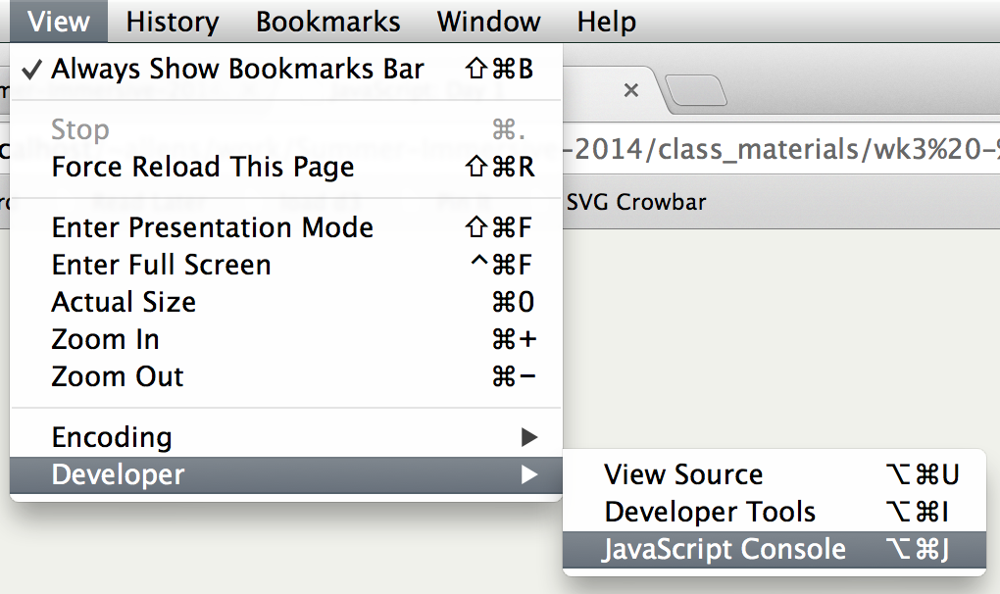
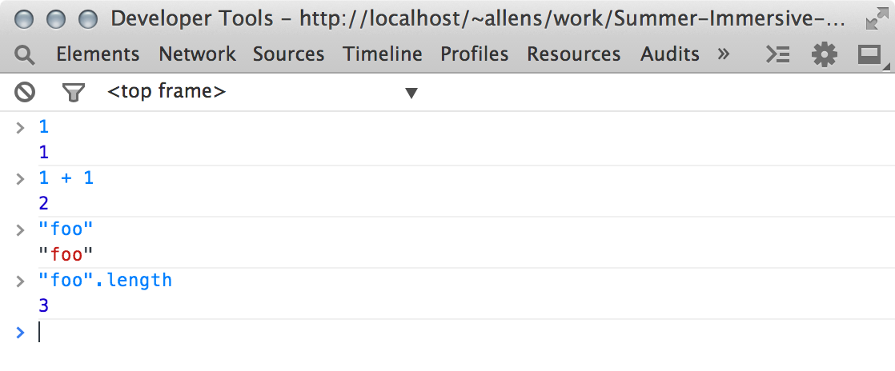

Chrome’s JavaScript console is where our journey starts.
The Chrome JavaScript console is a form of REPL, or shell.
return.return a value.Numbers are numeric values:
42 3.14 6e10 -20
Strings are textual values, or strings of characters:
"Hello, world!" 'hi'
Boolean values are binary, and can only be either
true or false
Objects are structures with named key/value pairs:
{first: "Shawn", last: "Allen"}
Arrays are ordered lists of other values:[42, 'hi', {size: 20}]
JavaScript also reserves some keywords
to indicate special values:
null is the "empty" valueundefined is the uninitialized valueInfinity represents an infinte value, e.g. division by zero
NaN means “Not a Number”, the result of invalid mathematical operationsVariables are named placeholders for values.
Use the var keyword to declare a variable,
with or without the = assignment:
var heightInFeet = 5.8;
var firstName;
firstName = "Bob";
var Bob = {
height: heightInFeet,
name: [firstName, "Nelson"]
};
var friends = [Bob, Sally];
Operators are symbols that, when placed between
two values, create (or evaluate to) a new value.
+ - * / %
1 + 1 // 2
4 - 3 // 1
2 * 2 // 4
6 / 3 // 2
10 % 3 // 1
+ can also be used to join, or concatenate strings:
"a" + "b" // "ab"
1 + "2" // "12"
Note how the presence of a non-numeric value
on either side changes the operator’s behavior!
== != === !== > < >= <=
These logical operators evaluate to true or false.
5 == 5; // true
2 != 3; // true
10 == "10"; // true
10 === "10"; // false
10 !== "10"; // true
10 > 11; // false
4 <= 5; // true
The ! operator negates the expression after it:
!true; // false
!!true; // true
= += -= *= /= %=
Assigment operators modify the left-hand value and return it:
var n = 10;
n += 5; // n == 15, evaluates to 15
n -= 2; // n == 13
n *= .5; // n == 6.5
n /= .25; // n == 26
n %= 5; // n == 1
The ++ (increment) and -- (decrement) mathematical
operators change the variable’s value, and can be placed
on either side of the expression:
var a = 1;
var b = 1;
a++; // a == 2, evaluates to 1
++b; // b == 2, evaluates to 2
a--; // a == 1, evaluates to 2
--b; // b == 1, evaluates to 1
Before an expression they are referred to as pre-increment
and -decrement operators; after they are called post-.
Objects are structures that have named
key/value pairs, or properties:
var office = {
sizeInSquareFeet: 1400,
streetAddress: "1234 Market Street",
zipCode: "94110"
};
Object properties can be accessed via the . symbol:
office.sizeInSquareFeet // 1400
office.streetAddress.length // 18
office.zipCode // "94110"
You can also access object properties dynamically
using the object[] (“bracket”) syntax:
var obj = {
foo: "a",
bar: 10
};
obj["foo"]; // "a"
var prop = "bar";
obj[prop]; // 10
An expression is any combination of literal values, variables, operators, and other constructs that evaluates to another value.
Expressions can be grouped within parentheses
to change the order in which they are evaluated:
var n = 5;
n + 2 * 10; // = 25
(n + 2) * 10; // = 70
Mathematial operators have different precedence levels,
so they evaluated in different orders without parentheses.
For instance, * and / are evaluated before+ and - unless you use parentheses.
The logical && (and) and || (or) operators are
used to create more complex boolean expressions:
var a = 6;
var b = 12;
a >= 5; // true
b <= 10; // false
(a >= 5) && (b <= 10); // false
(a >= 5) || (b <= 10); // true
Note that precedence also applies to these operators.
Use parentheses to avoid unexpected behavior.
The if, else, for, while and switch keywords
control which statements in your code are executed.
The term truthiness refers to the way in which JavaScript
treats different types of (non-Boolean) values as true
or false within the context of a Boolean expression
(such as a control structure):
length is greater than 0.null and undefined values are always falsy.The Boolean function returns an expression’s truthiness:
var truthy = Boolean(expression);The if and else statements conditionally execute code
depending on a Boolean expression’ truthiness:
if (condition) {
/* condition is true */
}
If statements may be followed by any number of
else if statements and a single else:
if (condition) {
/* condition is true */
} else if (other condition) {
/* condition is false and other condition is true */
} else {
/* condition is false */
}
for loops execute code iteratively, depending
on a condition that is repeatedly evaluated
(typically to execute a set number of times):
for (initial; condition; next) {
/* code to be executed for each iteration */
}
for (var i = 0; i < 10; i++) {
console.log("i = ", i);
}
Note that any of the initial, condition or next
statements may be omitted.
The for..in construct is used to iterate over
properties of objects:
for (var property in object) {
/* property is a property of object */
}
var obj = {foo: 1, bar: 2};
for (var key in obj) {
console.log(key, "=", obj[key]);
}
The while construct is like a for loop, but
without the start and next statements:
while (condition) {
/* condition is true */
}
var str = "well";
while (str.length < 10) {
str += ".";
}
Warning: while loops are the easiest way to create
an infinite loop, which may crash your browser.
The do..while construct is like a while loop,
except that the code is always executed once
before the while condition is evaluated:
do {
/* run once, then repeatedly while condition is true */
} while (condition);
var str = "well";
do {
str += ".";
} while (str.length < 3);
// str === "well.", even though condition was initially false
The switch statement is an alternative to if/else:
switch (expression) {
case value1:
/* expression === value1 */
break;
case value2:
/* expression === value2 */
break;
default:
/* expression !== value1 or value2 */
}
You can leave out the break; statements to allow
conditions to “fall through”, though this is rarely used
in practice because the behavior is confusing.
Functions are collections of statements that
take arguments and may return a value.
function addOne(n) {
return n + 1;
}
addOne(5); // returns 6
var n = 1;
function incrementBy(x) {
n += x;
}
incrementBy(1); // n == 2
incrementBy(5); // n == 7
A method is really just a property of an object
that happens to be a function.
There are lots of these in JavaScript,
such as the built-in string methods:
var grayarea = "GAFFTA"; // grayarea is a String
grayarea.toLowerCase(); // "gaffta"
grayarea.getCharAt(1); // "A"
Numbers have methods too:
var count = 10; // count is a Number
count.toString(); // "10"
count.toFixed(2); // "10.00"
Functions can either be named or anonymous, in which case they are usually assigned to variables or object properties:
var addOne = function(n) { return n + 1; }
addOne(5); // as before, returns 6
var car = {
make: "Honda",
model: "Accord",
drive: function() {
var distance = 0;
/* some fancy code */
return distance;
}
};
car.drive();
JavaScript defines many global functions that you can use:
escape("foo!"); // "foo%21"
parseInt("24"); // 24
Some so-called static methods belong to global objects,
and don’t relate to a particular instance of their class:
Math.round(99.9); // 100
String.fromCharCode(255); // "ÿ"
var obj = {foo: 1, bar: 2};
Object.keys(obj); // ["foo", "bar"]
In JavaScript, every function has its own scope
in which variables can be declared.
So-called local variables are only available to
their own scope, whereas global variables are
available in all scopes.
In this example, x is a global variable:
var x = 10;
function incrementXBy(n) {
x += n;
}
The local vs. global distinction has one catch, though:
Locally defined functions inherit variables from
the scope in which they were defined.
This feature of JavaScript is often used to create private variables that are only visible to the local scope.
var incrementor = function() {
var i = 1;
return function() {
return i++;
};
};
var nextId = incrementor();
nextId(); // 1
nextId(); // 2
This pattern uses an anonymous function to create
a private scope, and returns an object literal with a
method that accesses the id variable locally:
var module = (function() {
var id = 1;
return {
nextId: function() {
return id++;
}
};
})();
module.nextId(); // 1
module.nextId(); // 2
module.nextId(); // 3
You can add scripts to a page with the <script> element.
Inline scripts are written right inside the element:
<script>
/* your script here */
</script>
External scripts are written in a separate file and referenced via a <script> element with a src attribute:
<script src="path/to/script.js"></script>
The DOM is the interface that allows us to
manipulate HTML documents.
Most of the DOM is accessible via the
global variable document.
The term node refers to elements, their attributes,
and text (“text nodes”).
In most cases, though, you will interact
only with elements.
Here, el can be either document or a specific element node.
document.getElementById(id)el.getElementsByTagName(name)el.getElementsByClassName(class)el.querySelector(selector)el.querySelectorAll(selector)el.parentNode is the element’s parentel.firstChild is the element’s first childel.lastChild is its last child nodeel.childNodes is a list of the element’s children:el.childNodes.length tells you how many children it hasel.childNodes[index] orel.childNodes.get(index) returns an indexed child nodeel.innerText modifies its textel.innerHTML rewrites theel.setAttribute(attr, value)el.removeAttribute(attr)document.createElement(name)
creates an element with the given name:
var div = document.createElement("div");
This element won’t be a part of the document
until you append it to another element, though!
// just append it to the <body>
document.body.appendChild(div);
// or, e.g. <section id="foo">
var parent = document.getElementById("foo");
parent.appendChild(div);
<ul id="groceries"></ul>
<script>
var list = document.getElementById("groceries");
var groceries = ["cheese", "bread", "butter"];
for (var i = 0; i < groceries.length; i++) {
var item = document.createElement("li");
item.innerText = groceries[i];
list.appendChild(item);
}
</script>
DOM JavaScript isn’t exactly succinct.
Here are some libraries that can
help you write simpler code.
jQuery is a library that provides a simple wrapper
around DOM elements, the $ function:
var link = $("<a>")
.appendTo("body")
.attr("href", "http://grayarea.org")
.css("color", "gray")
.text("Gray Area");
$("h1").append("<span>hi!</span>");
jQuery popularized the concept of chaining,
in which most methods return the object.
D3 stands for Data Driven Documents, and
was designed primarily for data visualization.
var link = d3.select("body")
.append("a")
.attr("href", "http://grayarea.org")
.style("color", "gray")
.text("Gray Area");
d3.selectAll("h1")
.append("span")
.text("hi!");
D3 also employs chaining, but has a
slightly different API from jQuery.